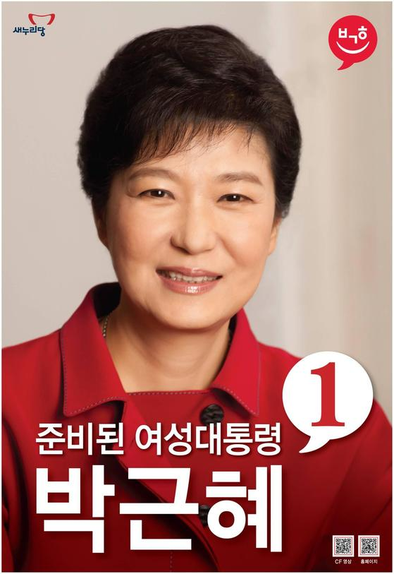

후보자 정보: 박근혜 (제18대 대통령 선거)

| 소속 정당 | 새누리당 |
|---|---|
| 생년월일 | 1952년 2월 2일 |
| 출신지 | 대구광역시 |
| 학력 | 서강대학교 전자공학과 학사 |
| 주요 경력 |
제17·18·19대 국회의원(대구 달성군) 한나라당 대표 새누리당 비상대책위원장 대한민국 제18대 대통령 |
주요 공약 및 정책
✔ 경제 민주화 추진: 재벌 개혁, 하도급 거래 개선, 공정거래위원회 권한 강화 등 시장 구조 개선 중심
✔ 복지 정책 확대: 4대 중증질환 진료 국가 책임제, 기초노령연금 확대, 맞춤형 복지전달체계 구축
✔ 일자리 창출: 고용률 70% 달성 목표, 창조경제 실현, 여성·청년 일자리 확대, 중소기업 활성화
✔ 교육 개혁: 대학 구조조정, 직업교육 중심 강화, 공교육 내실화, 창의적 인재 육성 강화
✔ 대북 정책: "한반도 신뢰 프로세스" 추진, 국제사회와의 공조를 통한 비핵화 유도
✔ 복지 정책 확대: 4대 중증질환 진료 국가 책임제, 기초노령연금 확대, 맞춤형 복지전달체계 구축
✔ 일자리 창출: 고용률 70% 달성 목표, 창조경제 실현, 여성·청년 일자리 확대, 중소기업 활성화
✔ 교육 개혁: 대학 구조조정, 직업교육 중심 강화, 공교육 내실화, 창의적 인재 육성 강화
✔ 대북 정책: "한반도 신뢰 프로세스" 추진, 국제사회와의 공조를 통한 비핵화 유도
비전과 슬로건
슬로건: "국민 행복 시대"
핵심 가치: 국민과의 약속 준수, 신뢰 기반의 국정 운영, 국민 통합과 경제 재도약
핵심 가치: 국민과의 약속 준수, 신뢰 기반의 국정 운영, 국민 통합과 경제 재도약
논란 및 이슈
✔ 최태민 관련 의혹: 과거 박근혜 후보가 최태민 목사와 그의 가족들과 얽힌 개인적 관계
✔ 독재자의 딸 논란: 아버지 박정희 전 대통령의 유신정권 시절을 둘러싼 정치적 유산에 대한 비판
✔ 정책 실현 가능성 논쟁: 복지 확대와 재정 건전성 간 충돌 가능성에 대한 우려 제기
✔ 대북관 입장 논란: 신뢰 프로세스의 실효성과 현실성에 대한 여야 간 이견 존재
✔ 독재자의 딸 논란: 아버지 박정희 전 대통령의 유신정권 시절을 둘러싼 정치적 유산에 대한 비판
✔ 정책 실현 가능성 논쟁: 복지 확대와 재정 건전성 간 충돌 가능성에 대한 우려 제기
✔ 대북관 입장 논란: 신뢰 프로세스의 실효성과 현실성에 대한 여야 간 이견 존재